A season now decides what is allowed to grow. This release adds six plants that keep their own calendar, wild berry bushes that sleep through the cold, and fields that sow themselves again when nobody is tending them.
Each crop belongs to one or more season tags — grows_in_spring,
grows_in_summer, grows_in_autumn, grows_in_winter.
Vanilla crops are tagged alongside the mod's own, and because it is all tags, a datapack
can re-tag any of them without touching code. Hold Shift on a seed or a crop to read its
seasons off the tooltip.
| Crop | Spring | Summer | Autumn | Winter |
|---|---|---|---|---|
| Tomato | ||||
| Cucumber | ||||
| Lettuce | ||||
| Strawberry | ||||
| Blackberry | ||||
| Blueberry | ||||
| Wheat | ||||
| Potatoes | ||||
| Carrots, beetroot | ||||
| Melon | ||||
| Pumpkin, sweet berries | ||||
| Torchflower, pitcher |
Right-clicking farmland with a seed out of its season does nothing and says so: Tomato Seeds cannot be planted in Autumn.
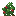
→The moment the season turns, anything out of season becomes a dead crop — instantly, not after a few ticks of looking fine.
A berry bush goes dormant rather than dying, and wakes back up leafy but bare — it does not hand back the berries it lost.
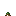
A crop nobody planted comes back as something the new season keeps alive, in patches three blocks wide. Anything you planted is left exactly as it fell.
Winter is the empty column. Nothing is in season, so nothing can be planted, everything in the ground dies, and no field sows itself again until spring.
Eight growth stages each, planted on farmland from their own seeds. Tomato and cucumber are picked by right-clicking a ripe plant, which drops it back to stage 4 to fruit again — worth leaving in the ground for the rest of the summer instead of tearing up.
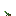
1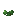
2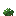
3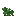
4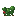
5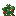
6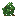
picked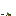
0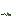
1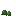
2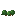
3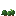
4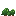
5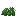
6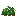
7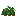
picked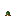
1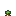
2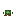
3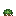
4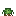
5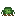
6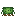
7Right-click a ripe crop and it is harvested and sown again in the same tick. Nothing about the yield changes: the drops come from the crop's own loot table and land at the plant's feet exactly as breaking it would, so tools and Fortune still decide the numbers. One seed is taken back out of the drops to pay for the replant.
The crops tag decides, not a list of the mod's own, so wheat, carrots, potatoes and beetroot are all picked this way alongside lettuce.
Wheat's table can roll no seed at all. Nothing is taken when that happens, rather than leaving you clicking a ripe crop that does nothing.
They are never torn up, so there is nothing to replant — the plant stays standing and drops back to stage 4 to fruit again.
Melon and pumpkin stems are not what you are harvesting, and berry bushes already pick themselves. Neither is reset.
Three bushes that generate in the world already fruiting, built on the sweet berry bush: four stages, picked by hand, replanted from their own berries. Which biome you are standing in tells you which berry you will find.
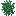
1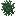
1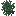
2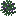
3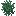
1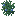
2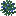
3Plains and forest are far bigger than taiga, so strawberry and blackberry patches are smaller and scarcer than the vanilla berry patch. A find, not a field.
Blueberry does not add bushes to the taiga. Vanilla's one patch every 32 chunks is halved between blueberry and sweet berry, so a patch is all of one or all of the other.
Out of season a bush becomes a bare cross of sticks — sweet berries included, since vanilla's bush follows the same calendar now.
Village fields are sown a lane at a time with whatever the season allows, the mod's crops among them, through the five vanilla farm processor lists.
A field that died over winter is sown again in spring, so a village reads as tended rather than abandoned.
Positions a player planted are remembered in world data. Self-sowing never overwrites them, and harvesting a regrowing crop does not give up the claim.
Changing thousands of blocks at once is spread over ticks on a budget, and chunks that load later are caught as they arrive.
Hold Shift on any seed for its seasons, and a refused planting says which crop and which season rather than failing silently.
A browned-over field is a block of its own, not a re-used vanilla texture, and it is what every out-of-season crop turns into.